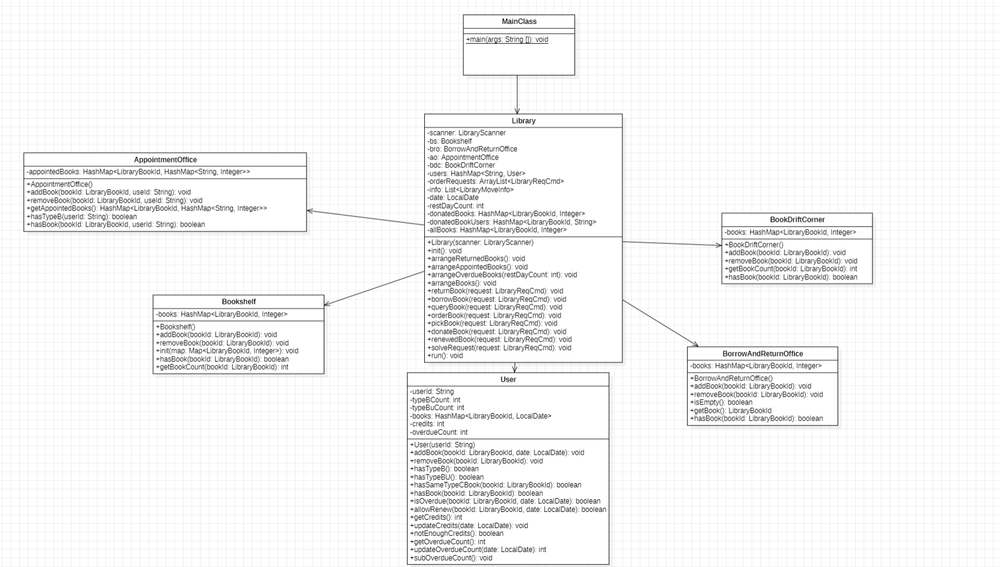
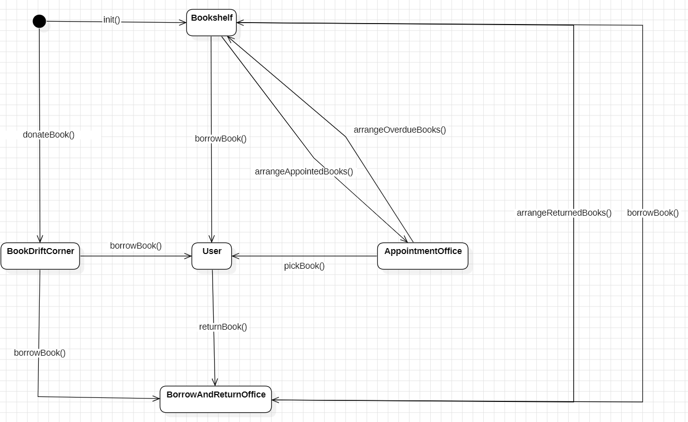

BUAA_OO_Unit4
BUAA_OO_第四单元总结
前言
首先，祝贺2206全体同学顺利完成COOOOS！！！正值高考结束，感触良多。
本单元作业是模拟一个图书馆管理系统，代码难度较低，主要是训练我们的建模架构能力，并运用好UML工具帮助我们更好的理解题目需求。
本单元架构分析
类图

状态图

架构分析
个人认为本次作业的架构还是十分满意的，基本可以满足“高内聚、低耦合”的要求。
本单元作业，根据书籍存放的位置，我对应建立Bookshelf、User、BorrowAndReturnedOffice、AppointmentOffice、BookDriftOffice这个五个类，并在内部使用HashMap存放对应书籍,虽然都是HashMap，但是由于各部分负责内容不同，所以具体上还是存在一定差异，例如，在AppointmentOffice中，我采用HashMap<LibraryBookId, HashMap<String, Integer>> appointedBooks，这样就可以记录这么书为谁保留、还剩几天。在User类中，我采用HashMap<LibraryBookId, LocalDate> books的结构，这样可以记录用户借阅的书籍还有几天截止。这五个类中方法大致相同，基本都是是否存在某本书、增加书、删除书，在第三次作业时，在User类中增加了信誉分以及涉及信誉分的查询、是否允许借阅操作。
此外，我在Library类中实例化了上述几个类
1 | |
具体操作方面，我将各种操作写成方法函数，这样每种操作都只对于一个方法:returnBook(request)、borrowBook(request)、queryBook(request)、orderBook(request)，pickBook(request)、renewedBook(request)、donateBook(request)、，并使用一个switch函数，根据操作类型判断使用哪个函数 。
1 | |
正向建模和开发
正向建模和开发是指从需求出发,通过分析、设计和实现的过程,最终生成满足需求的软件产品。这种方法强调从上到下的思路,先定义需求,然后进行设计和开发。
本单元其实相对考察正向建模能力的是第一次作业，在第一次作业中，我先是在草稿纸上有了大致的UML图后就开始写代码了，在写完代码后才进行具体的UML图的绘制，后两次作业中，主要都是在对应类中增加方法，和正向建模关系不大，但是这些都是建立在第一次作业的基础上，我在第一次作业时也考虑了后续用户不只学生，可能还包括老师、外校学生等，所以命名没有和官方包一致，有老师、外校学生等用户时直接采用继承。可以说，没有第一次的合理建模，就没有二三次作业的顺利完成。
四个单元中架构设计思维的演进
- U1中，我学习了层次化的设计，初识词法解析，学习过程举步维艰，更别谈架构，第一次作业主要参考了学长们的架构，一边写一边改进自己的架构，虽然这并不是一个比较好的思路，但对于一个新手来说，这是理解题目和提高自己能力的最好方式，但是最后总体架构较为理想，有了第一次作业的基础，二三次作业的迭代显得没那么困难了。
- U2中，我学习了多线程程序设计，多线程程序设计会产生非常多奇怪的bug，所以我个人认为第二次作业中，体现在架构中最重要的是时序逻辑的设计，本单元中我还是同第一单元相同，一边写一边改进自己的架构，比起一步到达一个比较理想的架构，或许，重构的过程才是学习架构分析最重要的步骤。
- U3中，我学习了JML语言，说实话，这个单元我打心底不太喜欢，或许让我们完成JML语言的书写意义更大，对着JML书写，完全失去了架构设计的学习，我知道针对某一特点函数写出一个效率较好的方法即可，甚至不需要了解题目要求
- U4中，我学习了UML类图、状态图、顺序图的绘制，不得不说，提前做好这些的大致草稿，再写起代码来可以说如有神助，也是这一单元，让我加深了好的架构设计的优越性，二三次作业每次只有一两百行代码的增加。
完成四个单元的作业后，我开始反思，为什么课程组一再强调架构设计，再看这么课程的名字“面向对象设计与构造”，而不是叫“Java程序设计”，或许这门课用什么语言都无所谓,可以指java,也可以是C++，因为重点始终是如何让我在“面向对象”中达到设计与构造。
四个单元中测试思维的演进
我不是一个擅长做全面测试的人，或者说我的测试更偏向于代码没有什么bug让自己心安的一种方式，由于一般完成作业较晚，所以中测数据就成了一个比较重要的部分，此外，针对个人代码，我会捏造一些奇怪的数据。此外测试过程中我也比较偏向于黑盒测试，相对单元测试，构造测试耗费的时间确实比较少，但是覆盖的范围和数据的有效性直接挂钩。
- U1中，数据构造比较简单，随机生成和结果检查都十分简单，评测构造不难，但是貌似意义不大，因为大家都问题基本都集中在效率上，所以还是人造点更靠谱。
- U2中，使用随机策略+多线程，简直是debug的噩梦，bug定位也十分困难。
- U3、U4，bug定位简单问题也主要集中在CPU超时上
每一单元我的测试大致流程大致如下：
- 利用样例和中测数据完成测试
- 利用随机生成数据简单轰炸
- 和他人手搓恶心数据，用于自己也用于他人（互测）
课程收获
八次实验、十六次作业，首先，OO对代码能力的提升是巨大，其次，OO带我们打开了大规模代码架构的大门，或许，OO作业规模的代码不足以体现出架构设计的优越性，但我相信这么课带给我们的在今后的日子里一定会闪着它的光芒。